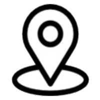
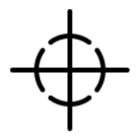

<!DOCTYPE html>
<html>
<head>
	<title>Marker Leaflet Map</title>
	<meta charset="utf-8" />
	<link rel="stylesheet" type="text/css" href="./leaflet.css" />
</head>
<body>

	<div id="map" style="width: 600px; height: 400px"></div>

	<script src="./leaflet.js" ></script>

	<script>
    var map = L.map('map').setView([48.130064, 11.583815], 14);  // München: Deutsches Museum
    mapLink = '<a href="http://openstreetmap.org">OpenStreetMap</a>';
    L.tileLayer(
			'http://{s}.tile.openstreetmap.org/{z}/{x}/{y}.png', {
			attribution: '&copy; ' + mapLink + ' Contributors',
			maxZoom: 18,
    }).addTo(map);

    // Liste der Markerpositionen
    var markerPositions = [
      [48.130064, 11.583815] // Position des ersten Markers
    ];

    // Erster Marker mit Änderungs-Event
    var marker = L.marker([48.130064, 11.583815], {
			draggable: true,
			title: 'Deutsches Museum',
			opacity: 0.5
    })
    .addTo(map)
    .bindPopup("Latitude: 48.130064<br>Longitude: 11.583815")
    .openPopup();

    // Event-Listener, um die Popup-Anzeige zu aktualisieren, wenn der Marker verschoben wird
    marker.on('moveend', function (e) {
			var lat = e.target.getLatLng().lat.toFixed(6);
			var lon = e.target.getLatLng().lng.toFixed(6);
			e.target.getPopup().setContent("Latitude: " + lat + "<br>Longitude: " + lon);
			e.target.openPopup();
    });

    // Funktion, um die aktuelle Position zu erhalten und einen Marker hinzuzufügen
    function addCurrentLocationMarker() {
			if (navigator.geolocation) {
				navigator.geolocation.getCurrentPosition(function (position) {
					var lat = position.coords.latitude;
					var lon = position.coords.longitude;

					// Position zur Liste hinzufügen
					markerPositions.push([lat, lon]);

					// Marker-Icon rot gestalten
					var redIcon = L.icon({
						iconUrl: './images/marker-icon-2x.png',
						iconSize: [25, 41],
						iconAnchor: [12, 41],
						popupAnchor: [1, -34]
					});

					L.marker([lat, lon], {
						icon: redIcon,
						title: 'Deine Position:'
					}).addTo(map)
					.bindPopup("<b>Deine Position:</b><br>" +
						"Latitude: " + lat.toFixed(6) + "<br>" +
						"Longitude: " + lon.toFixed(6) + "<br>" +
						'<a href="https://dhbw.koch.team" target="_blank">&nbsp;&nbsp;' +
						'Zurück zur DHBW Website</a>'
					)
					.openPopup();

					// Karte so anpassen, dass beide Marker mit Puffer zu den Rändern sichtbar sind
					map.fitBounds(markerPositions, { padding: [50, 50] });

					// Home-Icon führt immer wieder auf die eigene Position und zentriert Karte
					var goToCurrentLocationControl = L.control({ position: 'bottomleft' });  // can be: topleft, topright, bottomleft, bottomright
						goToCurrentLocationControl.onAdd = function () {
							let div = L.DomUtil.create('div', 'leaflet-bar leaflet-control leaflet-control-custom');
							div.innerHTML = '';
							div.onclick = function () {
								map.setView([lat, lon], 7);
							};
							return div;
						};
						goToCurrentLocationControl.addTo(map);

				}, function (error) {
						console.error("Geolocation error: ", error.message);
				});
			} else {
				alert("Geolocation is not supported by this browser.");
			}
    }

    // Aktuelle Position hinzufügen
    addCurrentLocationMarker();
	</script>
		
</body>
</html>
